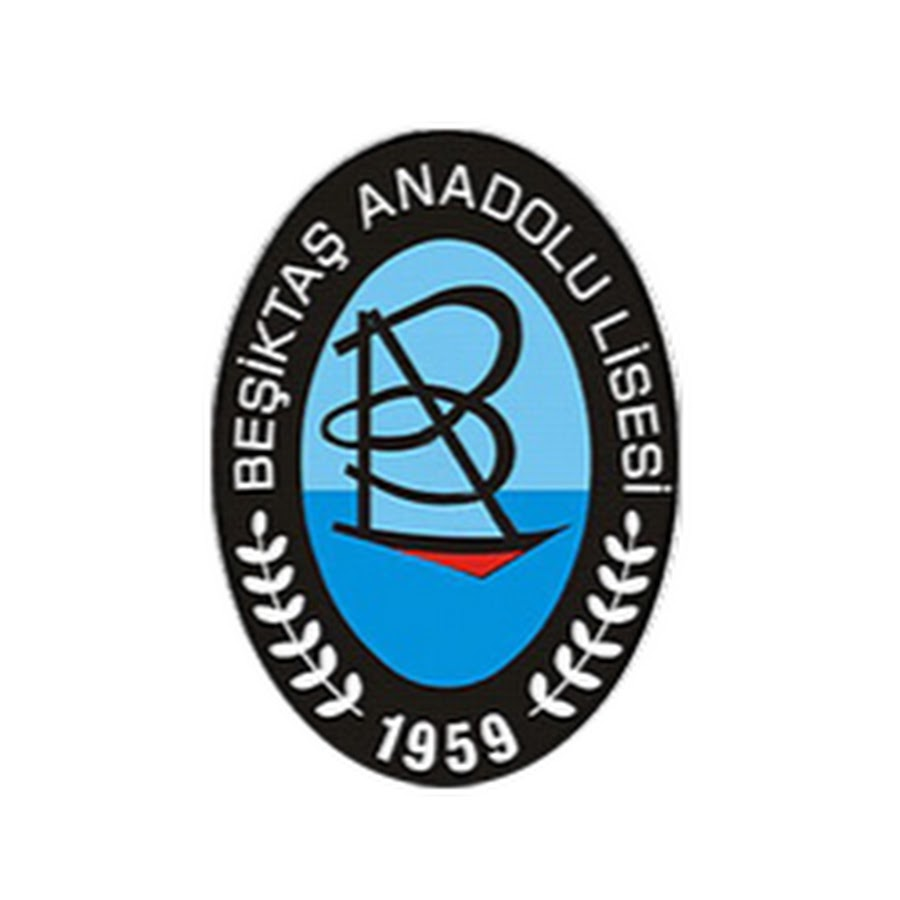

My Education
My academic background and the educational programs I have attended are listed below.

Istanbul Topkapı University
Software Engineering (Bachelor) | 2023 - 2026
I learned Python and C++ and gained insight into engineering practices.

Marmara University
Computer Programming (Associate) | 2021 - 2023
I learned C, C#, HTML, CSS, JS, and Java programming languages.

Beşiktaş Anadolu High School
High School Diploma | 2016 - 2020
I received a science-math oriented education.
Certificates
- Database Querying with SQL Certificate Program – Sakarya University (2024)
Work and Internship Experience
Intern | Webbilir
July 2022 - August 2022
Supported the development process of web applications.
Junior Software Engineer | Webbilir Istanbul Topkapı University
February 2024 - August 2024
Worked on project development, debugging, and database management tasks.